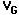
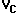
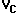
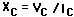
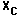
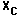
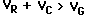

Experiment #2: A.C. Circuits
Reference: Simpson, Ch 2, Appendices A , C, & EObjective: To provide experience with A.C. Ohm's law, to demonstrate the frequency dependence of reactance and impedance, and to investigate the properties of simple filter circuits.
Procedure: All the voltages in this experiment will be measured using the oscilloscope, while the frequencies will be measured with the counter. Be sure its vertical gain control is in the calibrated position. Refer to the previous description.
I.
Capacitive Reactance
A. Set up the circuit shown in Figure 1 after using the impedance bridge and ohmmeter to determine the values of the components you are using.
- Be sure both your signal generator, oscilloscope and counter are plugged into the wall with 3-prong adaptors. Otherwise, there is an "invisible" connection between their black or "ground" terminals through the 3rd prong. If this connection exists, your readings will not be accurate. You can test for this effect by connecting the oscilloscope to the signal generator in both possible ways. The wave form should be the same amplitude in both cases.
B. At each of 10 different frequency settings between 1 kilohertz
and 100 kilohertz (1,2,4,7,10,20,40,70,100kHz), set  (the output voltage of the signal generator) to 2.00 as measured by the oscilloscope and then
measure and record along with the frequency the peak-to-peak
voltages for  and 
(the voltages across R, C, and the
generator). Make all three measurement at the same frequency
before going to another, and make them without changing the
generator amplitude setting.
and 
(the voltages across R, C, and the
generator). Make all three measurement at the same frequency
before going to another, and make them without changing the
generator amplitude setting.
C. Results and Analysis
-
Calculate the capacitive reactance at each frequency
according to .
Since R and C are in series,
the same current flows through each. Thus
 .
Make two cartesian graphs: one of  as a function of f (e.g., f is horizontal and is vertical) and one of
as a function of l/f. Why
suggest using l/f? Are the results reasonable? Why?
.
Make two cartesian graphs: one of  as a function of f (e.g., f is horizontal and is vertical) and one of
as a function of l/f. Why
suggest using l/f? Are the results reasonable? Why? - Based on your reactance results, calculate the capacitance and compare it to the actual value.
- A.C. Ohm's law
- Note that for each frequency setting . Is this a violation of Kirchoff's laws as learned in connection with D.C. circuits? Explain.
- Based on impedance considerations and the measured VÃ , compute the current expected at 2 of the frequencies from part I.B. Compare the theoretical values with those actually measured. Is the comparison reasonable? Explain.
- Low and High Pass Filters
- Arranging the circuit from part I as shown below puts it into the configuration know as a "low©pass" filter:
- Note that as actually measured, Vin is VÃ and V . For each measurement compute the ratio r = Æ(#¸ Graph the results and explain the terminology "lowªpass."
- Considering the circuit to be an A.C. voltage divider, compute the theoretical r = VÃ and show that it is r = 1/(1+RÃ
- Similarly the arrangementÆ(# is referred to as a "High pass" filter. Repeat steps (b) and (c) above for this case
II. Resonance
A. Set up the circuit shown in Figure 2 (your results will be best if it
is wired exactly as shown):
B. For 10 frequencies between 2KHz and 40KHz, measure and record the peak-to-peak voltage for V and V
Note: You should observe the VÃ to go through a definite peak (about a factor of VÃ ) over this range. If you observe no such behavior, or if your peak is less pronounced, consult the supervisor.
C. Graph VÃ over the range. The spread of the peak is related to the "Q" of the circuit, while the frequency of the greatest voltage is the resonant frequency. From your graph, estimate the resonant frequency and compare it with the value computed from theoretical considerations.
D. Note that the sum of the values Và at any frequency setting. Explain why this is not a violation of Kirchoff's law of voltages.
E. Rearrange the circuit so that the capacitor and inductor are adjacent as shown below:Æ(# Connect the signal generator as indicated by VÃ , and observe the voltage VÃ as the frequency is adjusted over the 2©20 KHz range. Describe qualitatively what you see. At the frequency of minimum VÃ , observe the value of VÃ . Explain why VÃ alone is much greater than VÃ
| Sample data and setup |